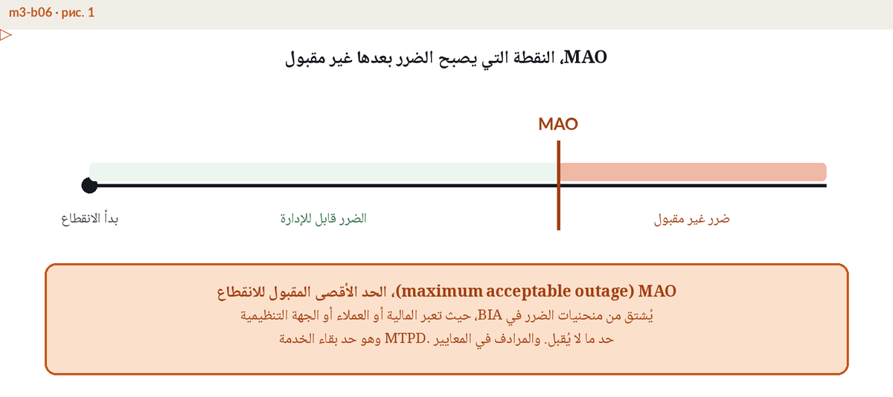

المرونة التشغيلية واستمرارية الأعمال، ما الذي يتغير فعلا
نتيجة تقاس، لا خطة أكثر سمكا
نشأت إدارة استمرارية الأعمال التقليدية حول العمليات والموارد، تحدد العمليات الحرجة وتحلل أثر فقدانها وتكتب خطط التعافي ثم تتمرن عليها. أما المرونة التشغيلية فتبدأ من الطرف المقابل. تفترض أن التعطل واقع لا محالة، فمركز البيانات سيتوقف يوما، والمورد الرئيسي سيخترق، ونظام المدفوعات سينقطع، ثم تطرح سؤالا واحدا، هل تبقى الخدمات المهمة للأعمال ضمن حدود الضرر المقبول بينما يحدث كل ذلك؟ والنظرتان قد تختلفان في الحكم. فقد تتوقف عملية داخلية وتستمر الخدمة عبر حل بديل، وقد "تتعافى" كل العمليات في مواعيدها بينما يتراكم على العملاء والأطراف المقابلة والمنظم ضرر لم يقبله أحد. وهكذا تنتقل وحدة الإدارة من العملية داخل المؤسسة إلى الخدمة كما يعيشها العميل والسوق، من طرف إلى طرف، عبر الإدارات والأنظمة والأطراف الثالثة.
من أين جاء المصطلح ولماذا صار قانونا
هذه اللغة كتبها المنظمون لا المستشارون. فبنك إنجلترا مع هيئتي PRA وFCA بنوا النظام البريطاني على ثلاثة مفاهيم، الخدمات المهمة للأعمال وحدود تحمل الأثر والسيناريوهات الشديدة المحتملة، وألزموا المؤسسات المالية بالقدرة على البقاء ضمن حدود التحمل بحلول مارس 2025. والاتحاد الأوروبي رسخ المنطق نفسه للقطاع المالي في لائحة DORA السارية منذ يناير 2025، وفي قلبها الخدمات الرقمية وموردو التقنية. وفي الخليج وضع مصرف الإمارات العربية المتحدة المركزي متطلبات للمرونة التشغيلية للمؤسسات المالية المرخصة تقوم على المفاهيم الثلاثة ذاتها، وتفاصيل ما يخص البنوك الإماراتية من نطاق ومواعيد وأسئلة يبدأ بها المشرفون تجدها في صفحتنا المخصصة لمتطلبات المصرف المركزي. ثلاث ولايات تنظيمية ولغة واحدة مشتركة، وهذا التقارب أقوى دليل على أن التحول بنيوي وليس موضة عابرة.

ما الذي يتغير فعلا مقارنة بالمنظومة التقليدية
الفروق قليلة لكن كل واحد منها يغير طريقة العمل.
| استمرارية الأعمال التقليدية | المرونة التشغيلية | |
|---|---|---|
| وحدة التحليل | العمليات الحرجة والموارد التي خلفها | الخدمات المهمة للأعمال من طرف إلى طرف بما فيها الأطراف الثالثة |
| المقياس الأساسي | RTO وRPO لكل عملية | حد تحمل الأثر لكل خدمة، حد للضرر لا هدف تعاف |
| الاختبار | مراجعات للخطط وتمارين مجدولة | سيناريوهات شديدة محتملة تدفع الخدمة حتى نقطة الانكسار |
| الحوكمة | مفوضة إلى مدير الاستمرارية | مساءلة مجلس الإدارة جزء من النظام نفسه |
أوضح الفروق هو المقياس. فمؤشر RTO هدف لاستعادة عملية واحدة، وتحقيق كل مؤشرات RTO لا يثبت إلا أن الخطط تعمل كل واحدة على حدة، وتفاصيل هذه المؤشرات مع RPO وMTPD في دليلنا لأهداف التعافي. أما حد تحمل الأثر فهو حكم في الضرر، أي النقطة التي يصبح بعدها تعطل الخدمة مؤذيا للعملاء أو للسوق أو لبقاء المؤسسة نفسها بدرجة يرفضها مجلس الإدارة. ويمكن للمؤسسة أن تحقق كل مؤشرات RTO في مواعيدها وتخرق حد التحمل مع ذلك، لأن الضرر يتراكم على طول السلسلة كلها. ويتغير الاختبار تبعا للمقياس، فالمراجعة تسأل هل تعمل الخطة، بينما السيناريو الشديد المحتمل يسأل عند أي نقطة تنكسر الخدمة، ويتوقع أن تكون الإجابة الصادقة مزعجة. وتصعد المساءلة في الحركة نفسها، فالمجلس يعتمد قائمة الخدمات وحدود تحملها ويجيب عنها أمام المشرف، وما ينبغي أن يحويه ملف المجلس لهذا الواجب موضوع دليل مستقل عن تقارير المجلس.

الجسر من منظومة استمرارية قائمة، أربع خطوات
لا شيء من هذا يلغي استمرارية الأعمال. فتحليل أثر الأعمال والخطط وعادة التمارين تصبح غرفة المحركات، والمضاف هو طبقة النتيجة فوقها. أربع خطوات تعبر بمنظومة قائمة إلى الضفة الأخرى.
- ارسم خريطة الخدمات المهمة للأعمال. اذكر ما تقدمه المؤسسة للعملاء والسوق لا ما تفعله الإدارات، وأبق القائمة قصيرة، فبنك متوسط الحجم يسمي عادة ثماني خدمات إلى اثنتي عشرة. ثم ارسم لكل خدمة السلسلة الكاملة التي تنتجها، من أشخاص ومواقع وأنظمة وبيانات وأطراف ثالثة.
- حدد حدود تحمل الأثر. لكل خدمة يعتمد المجلس حدا واضحا، أقصى ساعات تعطل أو معاملات مفقودة أو عملاء متضررين، ويشتق هذا الحد من الضرر الواقع لا مما تستطيع ترتيبات التعافي الحالية تحقيقه.
- اختبر حتى نقطة الانكسار. صمم سيناريوهات شديدة محتملة وشغل كل خدمة ضدها حتى يخترق حد التحمل، فالناتج ليس علامة نجاح بل خريطة نقاط ضعف لكل منها مالك وتاريخ معالجة.
- ارفع التقرير إلى مجلس الإدارة. الخدمات وحدود التحمل ونتائج الاختبارات وتقدم المعالجة تصبح بندا دائما على جدول أعمال المجلس لا ملحقا سنويا.
وحد تحمل الأثر والطبقة التنظيمية خلفه وآليات هذا الانتقال تدرس خطوة بخطوة في برنامج ERGP.
ست وحدات و94 فصلا وعمل ختامي يناقش أمام الممتحن وشهادة يمكن لأي أحد التحقق منها. أول شهادة في حوكمة المرونة متاحة بالعربية بالكامل، وبالإنجليزية أيضا. وحدة AE/SCNS/NCEMA 7000 في الداخل.
اكتشفوا شهادة ERGP ←